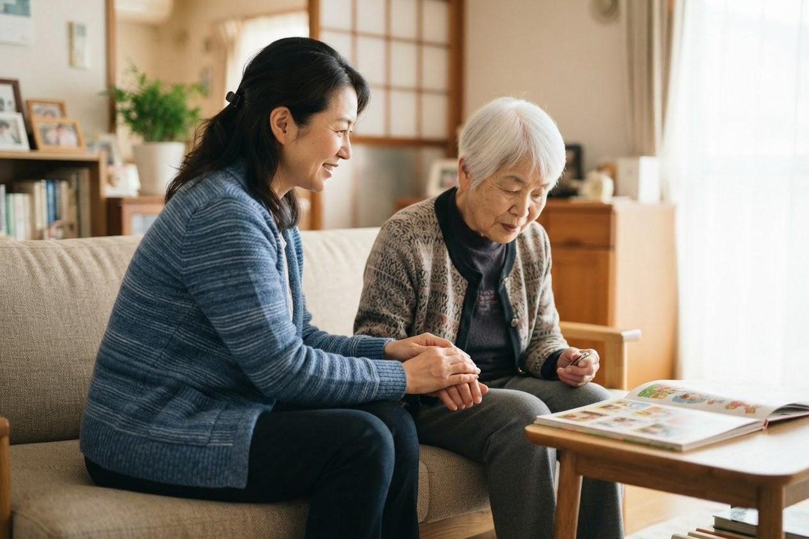

認知症の親にどう接すればよいのかわかりません。
A. 回答頭ではわかっていても、毎日のこととなると難しいものです。ひとつだけ手がかりを挙げるなら、「間違いを訂正する」より「その人が感じていることに合わせる」ほうが、結果的に落ち着くことが多いということです。記憶は抜けても、そのときに感じた不安や恥ずかしさは残ります。何を言われたかは忘れても、嫌な気持ちだけが残って混乱が強くなる、ということが起こります。

場面ごとの考え方
| 場面 | してしまいがちなこと | 試してみたいこと |
|---|---|---|
| 同じ話を何度もする | 「さっきも聞いた」と伝える | 初めて聞くように返す。話の内容より、話したい気持ちに応じます |
| 財布がなくなったと言われる | 「盗ってない」と否定する | 一緒に探します。見つけてもご本人が見つけた形にすると角が立ちません |
| 夕方に落ち着かなくなる | 座らせようとする | 照明を明るくする、一緒に少し歩く。付き合いながら時間が過ぎるのを待ちます |
| ひとりで外に出て戻れなくなる | 玄関を閉じ込める | 出たい理由（仕事に行く、家に帰る等）を聞き、いったん一緒に外へ。連絡先を持たせ、ご近所にも伝えておきます |
| 入浴や着替えを嫌がる | 説得を続ける | 時間をおいて誘い直す。ご家族以外（ヘルパーやデイの職員）だと応じることがあります |
| 食事をしたのに「食べていない」 | 「さっき食べた」と正す | 「今用意しますね」と伝え、軽いものを出す。空腹感より不安が理由のこともあります |
できないときがあって当然です
ここに書いたような対応を毎回できる方は、専門職を含めていません。疲れているときは声が強くなりますし、あとで自己嫌悪に陥ることもあります。それはご家族が悪いのではなく、一対一で毎日向き合い続ける形に無理があるということです。デイサービスやヘルパーを入れて、距離をとる時間をつくってください。
早めに受診をご検討ください
- 数日から数週間のうちに、急に様子がおかしくなった（別の病気やお薬の影響が隠れていることがあります）
- 強い混乱、幻を見る、極端に眠りこむ
- 転倒して頭を打ったあとに、様子が変わった
- 食事や水分がとれていない、脱水が心配な状態
一度ご相談ください
- 同じことを繰り返し聞く、約束を忘れることが増えた
- お金の管理や薬の管理が難しくなってきた
- 慣れた道で迷った、車の運転が不安になってきた
- 身だしなみや部屋の様子が以前と変わった
もの忘れの背景に、甲状腺の働きの低下、ビタミンの不足、脱水、お薬の影響など、対応することで改善が期待できる状態が隠れていることがあります。「年のせい」と決めてしまう前に、一度ご相談ください。
相談先
お住まいの地区の高齢者支援センターが、認知症の相談窓口も兼ねています。医療の面では、かかりつけの医療機関にご相談ください。当院でもご相談をお受けしており、必要に応じて専門の医療機関にご紹介します。ご家族だけで来院していただいてもかまいません。
当院では訪問診療・訪問看護を行っているほか、デイサービス・訪問介護・小規模多機能ホーム「こはる日和」、かしわじま居宅介護支援センター、サービス付高齢者向け住宅「メディケアビレッジかしわじま」を運営しています。医療と介護のどちらの窓口からでもご相談いただけます。
本ページは一般的な情報提供を目的としています。介護保険の制度は改正されることがあり、手続きや金額は年度・自治体によって異なります。最新の内容は倉敷市（介護保険課）または担当のケアマネジャーにご確認ください。ご不明な点はお電話（086-525-0600）にてお問い合わせください。
ご本人が受診を嫌がる場合、ご家族だけでのご相談も可能です。
📞 086-525-0600最終更新：2026年8月26日